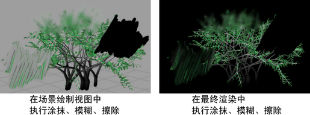

通过将笔刷类型分别设置为“擦除”(Erase)、“涂抹”(Smear)或“模糊”(Blur)，可以使用任何笔刷擦除、涂抹和模糊场景中的绘画。这些笔刷使用您用来擦除、涂抹或模糊的笔刷的形状影响现有笔划。例如，如果该笔刷具有叶，则涂抹、模糊或擦除绘画中已绘制叶的区域。
擦除笔刷可绘制 0 Alpha 值。笔划将在场景绘制视图和最终渲染中显示为黑色，这可能不会生成擦除的效果。但是，笔划将在 Alpha 蒙版中创建一个“洞”，这可能对某些合成工作流非常有用。

擦除、涂抹或模糊场景绘制视图中的绘画
- 打开 Paint Effects 窗口。
- 在“Paint Effects”窗口中，选择。
- 执行下列操作之一：
- 如果使用光笔和压力敏感的绘图板，则查看并根据需要修改压力映射（）。最多可以将三个笔刷属性映射到光笔压力。有关修改光笔压力映射的信息，请参见设置为在 3D 中绘制中的使笔刷响应光笔压力。
- 如果要忽略压力映射，请选择来禁用它。如果您使用鼠标而非光笔进行绘制，则可能希望忽略压力映射。
- 在“内容浏览器”(Content Browser)（）中或在工具架上，单击您要用于擦除、涂抹或模糊的笔刷预设。选定的笔刷设置将复制到模板笔刷。
- 选择并启用“在深度模式下绘制”(Paint at Depth)。
- 选择。“Paint Effects 笔刷设置”(Paint Effects Brush Settings)窗口将打开。
- 在“笔刷类型”(Brush Type)旁边，选择“擦除”(Erase)、“涂抹”(Smear)或“模糊”(Blur)。
- 在“通道”(Channels)下，禁用“深度”(Depth)并确保“Paint Effects 全局参数”(Paint Effects Globals)中启用的“强制深度”(Force Depth)处于禁用状态。
- 如果尚未设置，请在“阴影效果”(Shadow Effects)下，将“伪阴影”(Fake Shadows)设置为“无”(None)。
- 修改其他模板笔刷设置（如有必要）。有关修改模板笔刷设置的信息，请参见 Paint Effects 笔刷设置。
- 拖过您要擦除、涂抹或模糊的区域。
提示： 创建一些涂抹和模糊类型笔刷预设，并将它们保存到工具架上以方便访问。有关存储笔刷的信息，请参见
创建新的笔刷预设。